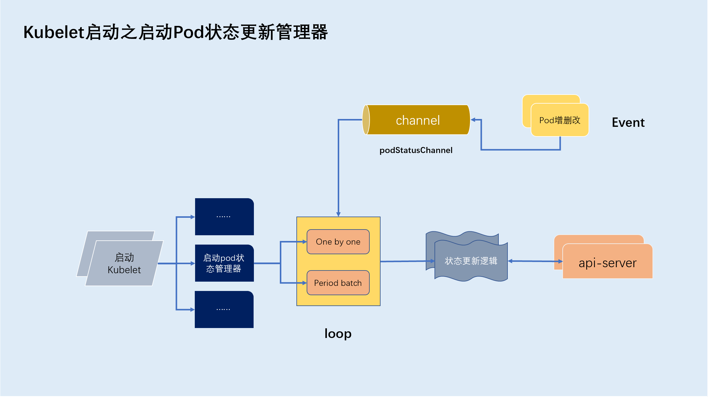

启动pod状态管理器
基于kubernetes v1.18.6
概述
pod管理器主要用来将本地pod状态信息同步到apiserver，statusManage并不会主动监控pod的状态，而是提供接口供其他manager进行调用。
对于pod状态的变更会推入名为podStatusChannel的通道，statusManage在启动的时候会开辟一个goroutine，用于循环处理podStatusChannel内pod状态变更对象。
statusManage对podStatusChannel内对象的处理分为两种方式：
- 方式一:
sync()。按顺序逐一处理podStatusChannel内对象，先进先出 - 方式二:
batch()。每10s批量处理
两种方式同步进行

状态管理器数据结构
kubeClient: 用于和apiserver交互，查询/更新pod状态podManager: 用于管理本地pod缓存信息（避免频繁与apiserver交互）podStatuses: 缓存本地pod状态，map类型，key为pod的uid，value为pod的status字段内容。podStatusesLock: 线程锁podStatusChannel: 存放pod状态变更事件channel，该通道为缓冲通道，缓冲1000个podStatusSyncRequest对象。apiStatusVersions: 维护最新的pod status版本号，每更新一次会加1podDeletionSafety: 安全删除pod的接口
type manager struct {
kubeClient clientset.Interface
podManager kubepod.Manager
// Map from pod UID to sync status of the corresponding pod.
podStatuses map[types.UID]versionedPodStatus
podStatusesLock sync.RWMutex
podStatusChannel chan podStatusSyncRequest
// Map from (mirror) pod UID to latest status version successfully sent to the API server.
// apiStatusVersions must only be accessed from the sync thread.
apiStatusVersions map[kubetypes.MirrorPodUID]uint64
podDeletionSafety PodDeletionSafetyProvider
}
状态管理器初始化阶段
在初始化kubelet实例的时候初始化
func NewMainKubelet(kubeCfg *kubeletconfiginternal.KubeletConfiguration,
kubeDeps *Dependencies,
crOptions *config.ContainerRuntimeOptions,
containerRuntime string,
hostnameOverride string,
nodeIP string,
providerID string,
cloudProvider string,
certDirectory string,
rootDirectory string,
registerNode bool,
registerWithTaints []api.Taint,
allowedUnsafeSysctls []string,
experimentalMounterPath string,
experimentalKernelMemcgNotification bool,
experimentalCheckNodeCapabilitiesBeforeMount bool,
experimentalNodeAllocatableIgnoreEvictionThreshold bool,
minimumGCAge metav1.Duration,
maxPerPodContainerCount int32,
maxContainerCount int32,
masterServiceNamespace string,
registerSchedulable bool,
keepTerminatedPodVolumes bool,
nodeLabels map[string]string,
seccompProfileRoot string,
bootstrapCheckpointPath string,
nodeStatusMaxImages int32) (*Kubelet, error) {
...
klet.statusManager = status.NewManager(klet.kubeClient, klet.podManager, klet)
...
}
sync()处理流程解析
当一个pod状态变更被推入podStatusChannel后，且未到达定时器设置时间（10s间隔），将交由sync()函数处理。
首先我们了解下podStatusChannel存放的对象数据结构：
podUID:pod的uidstatus:pod状态变更对象type podStatusSyncRequest struct { podUID types.UID status versionedPodStatus }status:pod的status字段(可通过kubectl get pod <pod-name> -n <pod-namespace> -o yaml查看)version:pod状态变更版本计数，每变更一次对应加一。podName:pod名称podNamespace:pod所属命名空间
type versionedPodStatus struct {
status v1.PodStatus
// Monotonically increasing version number (per pod).
version uint64
// Pod name & namespace, for sending updates to API server.
podName string
podNamespace string
}
接下来我们来分析下处理流程:
- 判断
pod是否需要更新。判断方式如下（顺序执行判断逻辑）: - 根据
pod uid从apiStatusVersions获取pod实例，若获取失败（如：第一次创建时并没有存储pod状态信息）则需要更新 - 根据
pod uid从apiStatusVersions获取pod实例，若获取的pod状态版本（statusManager.apiStatusVersions[<pod uid>]）小于podStatusSyncRequest对象的status.version版本，则需要更新 - 根据
pod uid从podManager获取pod实例，若获取失败（如已经被删除）则不需要更新 - 上述情况均不满足会调用
canBeDeleted()函数。canBeDeleted()函数判断如下：pod不存在DeletionTimestamp字段或pod类型为镜像类型pod，不需要更新- 上述情况均不满足，说明
pod处于删除状态。调用PodResourcesAreReclaimed()函数，判断是否可以安全删除，返回PodResourcesAreReclaimed()函数返回值
PodResourcesAreReclaimed()函数判断以下状态的pod是否已被安全删除（pod可能处于删除中状态，但未删除完毕）:
pod处于terminated状态，但仍有container处于running状态，返回falsepod处于terminated状态，但无法从podCache缓存对象中获取运行时信息，返回falsepod处于terminated状态，但仍有container未被清理完毕，返回falsepod处于terminated状态，但仍有卷未被清理完毕，返回falsepod处于terminated状态，但pod cgroup沙盒未被清理完毕，返回false从
apiserver获取pod实例（入参命名空间、pod名称），若获取不到（可能已被删除），说明不需要同步Pod状态，跳出对当前pod处理流程。- 对比
podStatusSyncRequest.podUID与从apiserver查询到的pod uid是否相同，如不相同说明pod可能被删除重建，则不需要同步Pod状态，跳出对当前pod处理流程。 - 调用
apiserver同步pod最新的status。同步之前比对oldPodStatus与newPodStatus差异，若存在差异调用api-server对pod状态进行更新，并将返回的pod作为newPod，如不存在差异将不会调用api-server进行更新。其中 oldPodStatus: 根据pod归属命名空间、pod名称从apiserver查询到的pod实例的status值newPodStatus: 从podStatusChannel通道传递来的需要更新状态的pod实例的status值。- 调用
canBeDeleted()函数（删除pod事件触发的修改pod状态会走该逻辑）。canBeDeleted()函数判断如下：newPod不存在DeletionTimestamp字段或newPod类型为镜像类型pod，返回false- 上述情况均不满足，说明
newPod处于删除状态。调用PodResourcesAreReclaimed()函数，判断是否可以安全删除，返回PodResourcesAreReclaimed()函数返回值
PodResourcesAreReclaimed()函数判断以下状态的newPod是否已被安全删除（pod可能处于删除中状态，但未删除完毕）:
newPod处于terminated状态，但仍有container处于running状态，返回falsenewPod处于terminated状态，但无法从podCache缓存对象中获取运行时信息，返回falsenewPod处于terminated状态，但仍有container未被清理完毕，返回falsenewPod处于terminated状态，但仍有卷未被清理完毕，返回falsenewPod处于terminated状态，但pod cgroup沙盒未被清理完毕，返回false
当newPod可以被安全删除，调用apiserver对newPod执行删除操作，删除成功后将newPod从statusManager.podStatuses（该对象缓存pod状态信息）中删除

核心源码
func (m *manager) syncPod(uid types.UID, status versionedPodStatus) {
if !m.needsUpdate(uid, status) {
klog.V(1).Infof("Status for pod %q is up-to-date; skipping", uid)
return
}
// TODO: make me easier to express from client code
pod, err := m.kubeClient.CoreV1().Pods(status.podNamespace).Get(context.TODO(), status.podName, metav1.GetOptions{})
if errors.IsNotFound(err) {
klog.V(3).Infof("Pod %q does not exist on the server", format.PodDesc(status.podName, status.podNamespace, uid))
// If the Pod is deleted the status will be cleared in
// RemoveOrphanedStatuses, so we just ignore the update here.
return
}
if err != nil {
klog.Warningf("Failed to get status for pod %q: %v", format.PodDesc(status.podName, status.podNamespace, uid), err)
return
}
// 获取pod真实uid（针对static类型pod的uid需要做转换）
translatedUID := m.podManager.TranslatePodUID(pod.UID)
// Type convert original uid just for the purpose of comparison.
if len(translatedUID) > 0 && translatedUID != kubetypes.ResolvedPodUID(uid) {
klog.V(2).Infof("Pod %q was deleted and then recreated, skipping status update; old UID %q, new UID %q", format.Pod(pod), uid, translatedUID)
m.deletePodStatus(uid)
return
}
oldStatus := pod.Status.DeepCopy()
newPod, patchBytes, unchanged, err := statusutil.PatchPodStatus(m.kubeClient, pod.Namespace, pod.Name, pod.UID, *oldStatus, mergePodStatus(*oldStatus, status.status))
klog.V(3).Infof("Patch status for pod %q with %q", format.Pod(pod), patchBytes)
if err != nil {
klog.Warningf("Failed to update status for pod %q: %v", format.Pod(pod), err)
return
}
if unchanged {
klog.V(3).Infof("Status for pod %q is up-to-date: (%d)", format.Pod(pod), status.version)
} else {
klog.V(3).Infof("Status for pod %q updated successfully: (%d, %+v)", format.Pod(pod), status.version, status.status)
pod = newPod
}
m.apiStatusVersions[kubetypes.MirrorPodUID(pod.UID)] = status.version
// We don't handle graceful deletion of mirror pods.
if m.canBeDeleted(pod, status.status) {
deleteOptions := metav1.DeleteOptions{
GracePeriodSeconds: new(int64),
// Use the pod UID as the precondition for deletion to prevent deleting a
// newly created pod with the same name and namespace.
Preconditions: metav1.NewUIDPreconditions(string(pod.UID)),
}
err = m.kubeClient.CoreV1().Pods(pod.Namespace).Delete(context.TODO(), pod.Name, deleteOptions)
if err != nil {
klog.Warningf("Failed to delete status for pod %q: %v", format.Pod(pod), err)
return
}
klog.V(3).Infof("Pod %q fully terminated and removed from etcd", format.Pod(pod))
m.deletePodStatus(uid)
}
}
syncBatch()处理流程解析
syncBatch()主要是将statusManager.podStatuses中的数据与statusManager.apiStatusVersions和statusManager.podManager中的数据进行对比是否一致，若不一致则以statusManager.podStatuses中的数据为准同步至apiserver。
statusManager.podStatusesstatusManager.podManagerstatusManager.apiStatusVersions: 维护最新的pod status版本号，map类型集合，key为pod uid，value为pod status